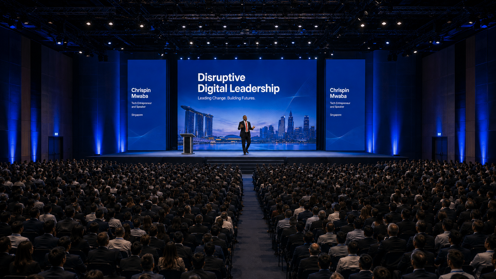

🎤
Keynote Speaking
High-energy talks for leaders, founders, and teams navigating digital disruption.
Make an enquiry →Speaker. Digital Strategist. AI Transformation Advisor. Tech Entrepreneur.
Help companies, leaders, entrepreneurs and institutions use AI, digital strategy and technology to unlock growth, improve performance and prepare for the future economy.help companies, leaders, entrepreneurs and institutions use AI, digital strategy and technology to unlock growth, improve performance and prepare for the future economy.

Digital leadership
Entrepreneurship
Future-ready teams
Begin with bold leadership
Chrispin Mwaba is a dynamic technology entrepreneur, digital strategy expert and AI transformation speaker helping leaders, companies and institutions unlock the next level of growth in the digital economy. With over 15 years of experience across ICT, telecommunications, business technology and digital transformation, Chrispin brings a powerful blend of boardroom insight, practical business experience and future-focused thinking to every platform he steps onto.
His message is clear: The future belongs to those who can think digitally, lead intelligently and execute boldly. Through his speaking, advisory work and entrepreneurial ventures, Chrispin helps organisations understand how to 10X their results using AI, build future-ready teams, raise a new generation of AI and digital millionaires, and inspire ordinary people to prepare for an uncommon future.
Global stage presence
Leadership for new markets
Signature topics
Choose a keynote, workshop, media feature, or leadership programme shaped around your organisation’s next stage of growth.
High-energy talks for leaders, founders, and teams navigating digital disruption.
Make an enquiry →Practical sessions that help teams lead change, build trust, and execute with clarity.
Make an enquiry →Hands-on strategy workshops for organisations ready to turn bold ideas into action.
Make an enquiry →Sharp perspectives on technology, entrepreneurship, digital transformation, and Africa’s future.
Make an enquiry →The masterclass
A focused leadership experience for founders, executives, and teams who need to adapt faster, lead smarter, and build cultures ready for continuous change.
Request availabilityFeatured keynote
The leaders who win the future are not the ones who fear disruption. They are the ones who learn how to direct it.
Say hello
For keynotes, workshops, panels, interviews, and leadership programmes, send an enquiry and we’ll respond with availability and next steps.
Start your enquiry